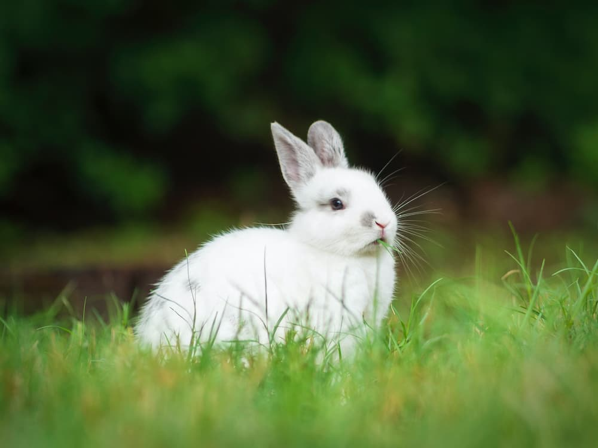
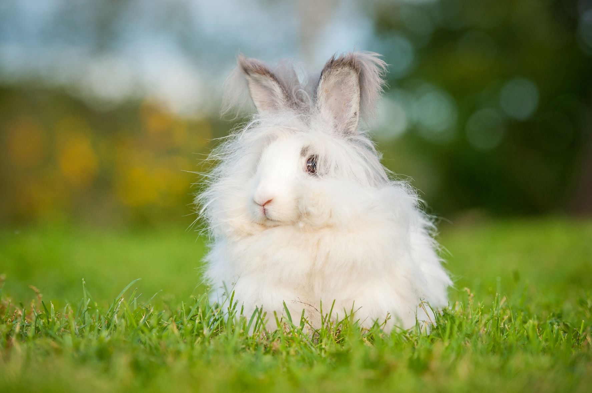
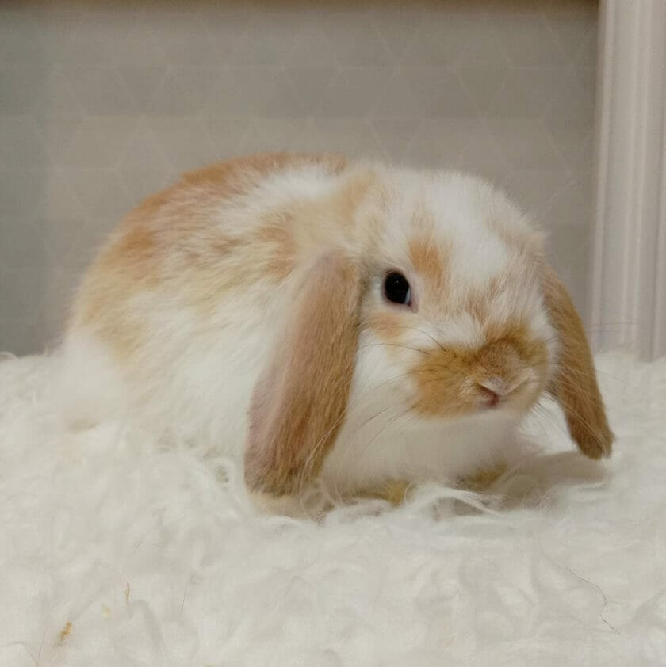
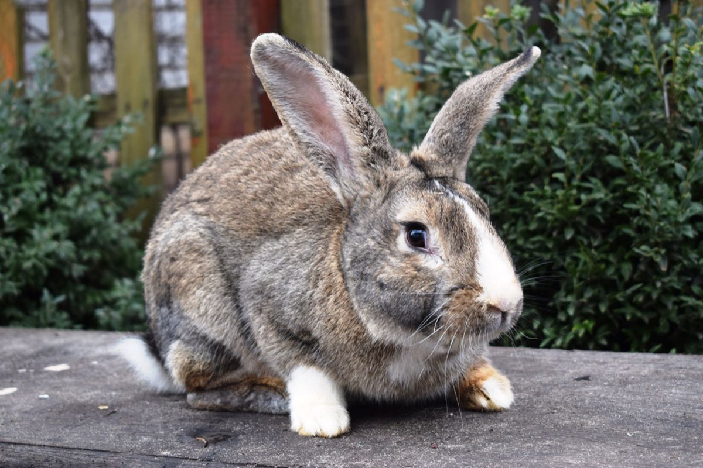

Definisi Kelinci

Kelinci atau kuilu dalah hewan mamalia dari famili Leporidae, yang
dapat ditemukan di banyak bagian bumi. Kelinci berkembang biak
dengan cara beranak yang disebut vivipar. Dulunya, hewan ini adalah
hewan liar yang hidup di Afrika hingga ke daratan Eropa. Pada
perkembangannya, tahun 1912, kelinci diklasifikasikan dalam ordo
Lagomorpha. Ordo ini dibedakan menjadi dua famili, yakni Ochtonidae
(jenis pika yang pandai bersiul) dan Leporidae (termasuk di dalamnya
jenis kelinci dan terwelu).
Asal kata kelinci berasal dari bahasa Belanda, yaitu konijntje yang
berarti "anak kelinci". Hal ini menunjukkan bahwa masyarakat
Nusantara mulai mengenali kelinci saat masa kolonial, padahal di
Pulau Sumatra ada satu spesies asli kelinci sumatera (Nesolagus
netscheri) yang baru ditemukan pada tahun 1972.
Klasifikasi Kelinci

Dalam ilmu biologi kelinci termasuk dalam kelompok hewan
pseudoruminansia atau herbivora yang tidak memiliki kemampuan
mencerna serat secara sempurna. Menurut Sarwono dalam bukunya yang
berjudul “Kelinci Potong dan Hias”, klasifikasi kelinci berdasarkan
ilmu taksonomi, sebagai berikut:
- Kingdom: Animalia
- Phylum: Chordata
- Sub Phylum: Vertebrata
- Kelas: Mamalia
- Ordo: Legomorpha
- Family: Leporidae
- Genus: Oryctogalus
- Spesies: Oryctogalus cunniculus
Jenis Kelinci
Untuk Anda yang ingin memelihara kelinci, tak ada salahnya memahami
terlebih dahulu beragam jenis kelinci yang ada. Berikut ini
penjelasan tentang macam-macam kelinci.
1. Kelinci Anggora

Mungkin kita sudah tidak asing lagi dengan kucing anggora.
Ternyata kelinci juga ada yang masuk dalam kelompok anggora. Tipe
ini termasuk kelinci hias yang banyak disukai.
Ciri kelinci ini yaitu bulu yang panjang dan lebat. Bulu kelinci
ini tumbuh sekuatr 2 cm per bulannya. Karena bulunya yang lebat
dan halus, maka sering dimanfaakan untuk bahan pembutan wool.
Sayangnya kelinci ini tidak kuat tinggal di daerah tropis karena
mudah sakit jika hidup didaerah yang panas. Maka dari itu perlu
adanya perhatian khusus saat hendak memelihara kelinci anggora.
2. Kelinci Lop

Kelinci hias lainnya yaitu jenis lop. Hewan ini berasal dari
Belanda dengan ciri telinga menggantung dari kepala sampai pipi.
Ciri khas lainnya yaitu hidungnya pesek. Ukuran tubuhnya sekitar
12 – 23 cm.
Sama seperti jenis anggora, kelinci lop juga mudah sakit, sehingga
saat memeliharanya harus ada perawatan khusus. Jenis kelinci ini
juga mudah stres, jadi Anda juga harus memahami tanda-tanda ketika
kelinci tersebut sudah mulai stres.
3. Kelinci Flemish Giant

Jenis kelinci selanjutnya berbeda dengan dua jenis sebelumnya.
Jika kelinci sebelumnya memiliki tubuh yang relatif kecil, namun
flemish giant ini tubuhnya sangat besar. Panjang tubuhnya mencapai
51 cm dengan berat badan 8 – 13 kg.
Flemish giant termasuk dalam kelompok kelinci liar. Ukuran yang
besar membuat dagingnya lebih banyak. Dagingnya bisa dimanfaatkan
untuk konsumsi, karena memiliki rasa yang khas.
Sayangnya kaki kelinci ini tidak cukup kuat. Kakinya mudah patah
karena tidak sanggup menopang badannya yang terlalu besar.